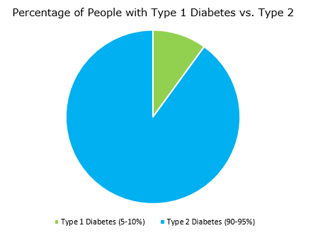

Type 1 Diabetes
About
Type 1 diabetes is an autoimmune disease where the immune system attacks beta cells of the pancreas. Beta cells function to produce insulin which tells cells in the body to take in glucose for energy. With fewer beta cells, patients with Type 1 Diabetes often need some sort of treatment to get more insulin so they can absorb sugar. Treatment for type 1 diabetes is often very involved, which can lead to societal and behavioral challenges for the individual. Insulin injections can also be costly and the condititon is fatal if not treated, which leads to ethical and political challenges as well.

Type 1 Diabetes vs. Type 2
There are two kinds of diabetes: type 1 and type 2, and both are associated with high blood sugar levels. Also known as juvenile diabetes, the onset of type 1 diabetes is often in children and young adults. It is an autoimmune disease and cannot be controlled without taking insulin. In contrast, type 2 is often diagnosed in adults and is associated with excess body weight. The patient's body loses the ability to respond to insulin, which leads to more insulin production than normal. Along with medication, a change in diet can also be effective in treating this condition.
| Type 1 | Type 2 |
|---|---|
| Makes up 5-10% of diabetics | Makes up 90-95% of diabetics |
| Diagnosis usually before 20 years old | Diagnosis usually at 30+ years old |
| Treated with insulin injections | Can be treated with lifestyle change |
| Not associated with obesity | 80% of type 2 diabetics are obese |
| Lower than normal levels of insulin produced | Often higher levels of insulin, but have resistance to it |